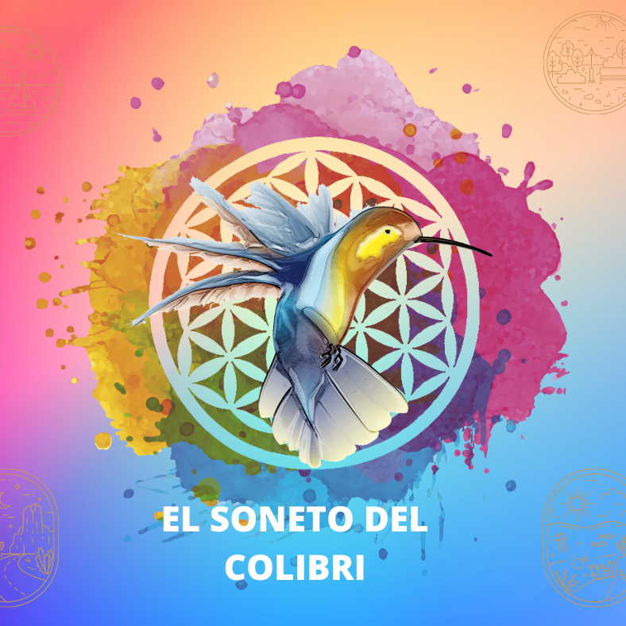

Claudia Almaraz
Conductora • Comunicadora • Creadora de contenido
Creadora y conductora de El Soneto del Colibrí, un espacio de conversación, historias y experiencias del que nacen proyectos y comunidades como El Club de los 50.

El Soneto del Colibrí
Podcast y comunidad creada por Claudia Almaraz. Historias, conversaciones y nuevas formas de conectar.
El Club de los 50
Una de las comunidades que forman parte del universo de El Soneto del Colibrí.
Próximamente más información